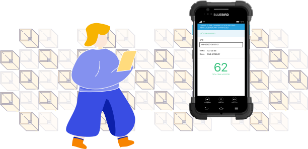
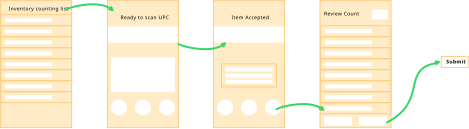
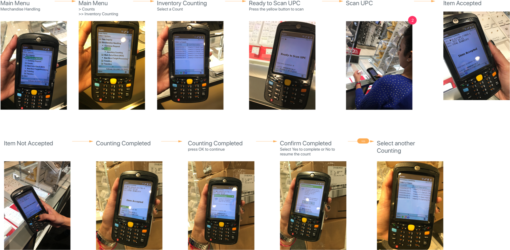
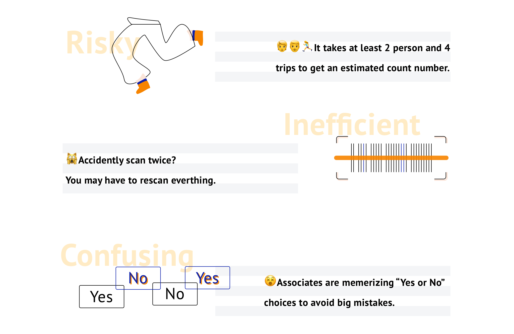
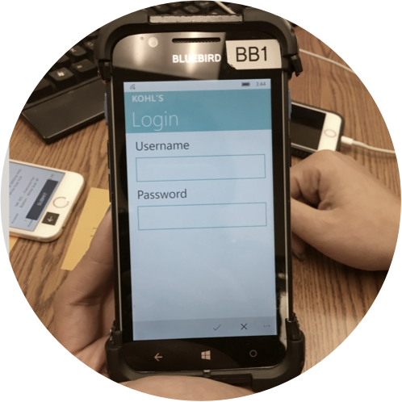
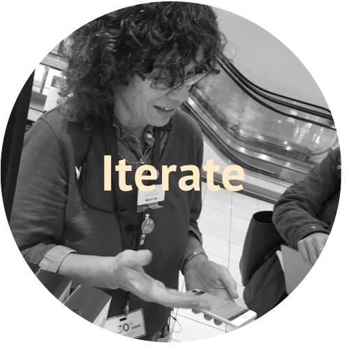
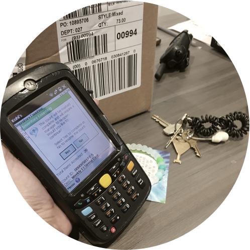
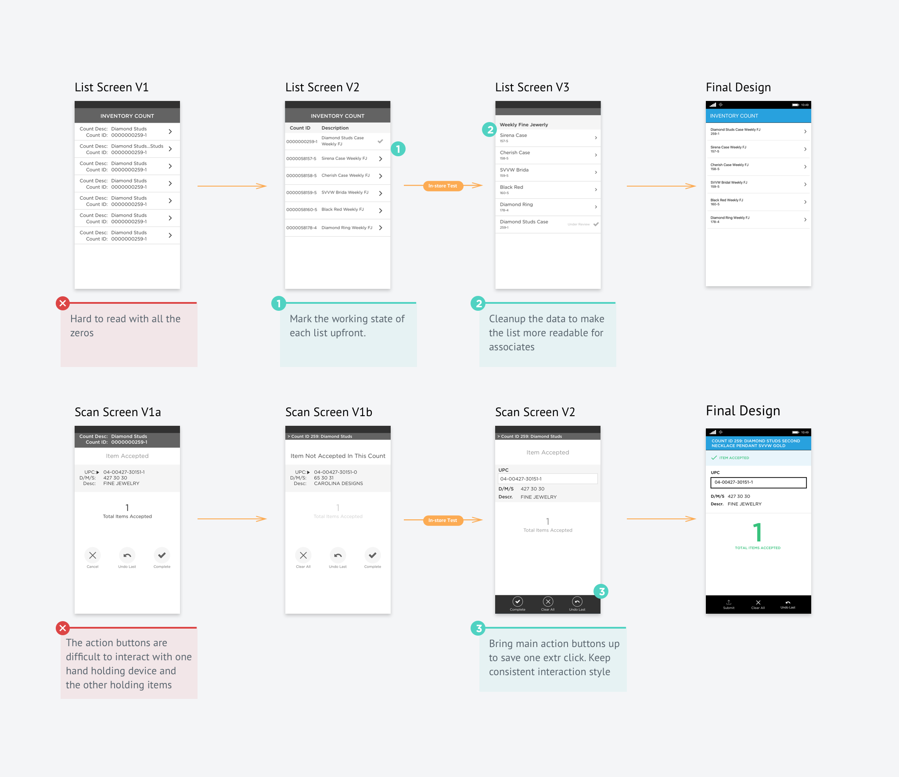
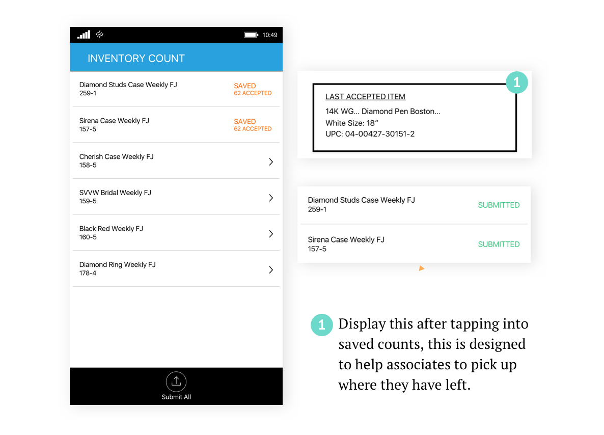
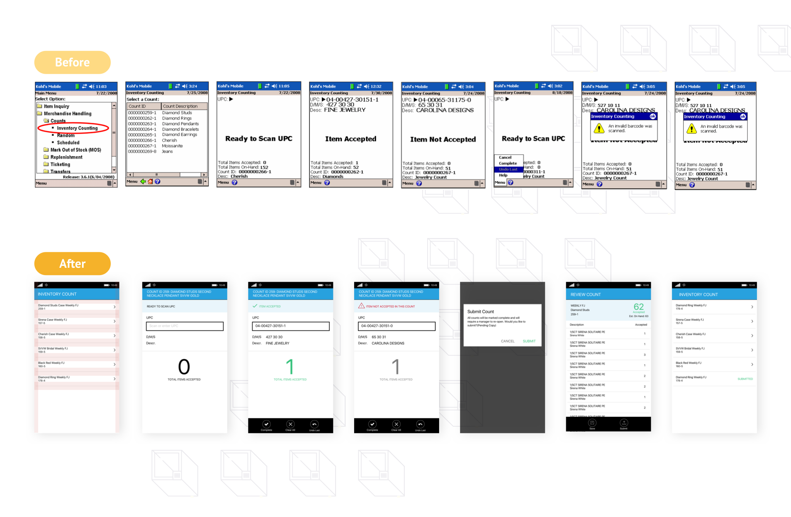

Efficient & accurate inventory management for department stores
To help simplify the inventory management, in 2016, Kohl's decides to move its inventory counting process from a dedicated RF device into a smart enterprise mobile device, bluebird. This is a story of how I made this transition as easy as possible for Kohl's associates at over 1100 stores.
🎨 Lead Designer
⏱️ Launched May, 2017
📄 In-store, Enterprise Mobile Bluebird
I led the UX design process in November,2016 until its full release in May, 2017. I worked alongside with a researcher, a design manager, a project manager and couple engineers working on bluebird windows 10.

USER RESEARCH
Our lack of domain knowledge in inventory management meant we needed
to understand the current process of inventory counting in the stores
thoroughly and quickly. At the begining phase of the project, we
conducted contextual inquiry with the store associates to understand
the challenges and opportunities in their day-to-day work. These
research methods also helped us to have a better view of the complexity
side of inventory management
EXPERIENCE MAPPING

One thing we agreed on from day one within the customer experience team is that this is a transitional experience. This is NOT to design something completely new from scratch. We should keep the experience from the RF device to the enterprise mobile phone, Bluebird as similar as possible to reduce unnecessary trainings for associates. This early design decision had a major impact on the quality of the end result throughout the design process.
Current Experience Flow

Some challenges of the inventory counting we disovered:

DESIGN HIGHLIGHTS
Associate will be able to start with a clear estimation of workload with 1 click, instead of tapping 3 times to access the "ready to scan" screen.
A one hand free design to make sure that associates scan without stopping even if there is an error occured.
Instead of tapping 4 times without knowing for sure what they are selecting, with the upgraged design, associates will be able to review what they scanned before submission to avoid risking into rescan everything for just one misscan/double scan.
DESIGN ITERATION



Within 2 weeks, with the support from my research partner, we were able to test out our design in 2 store locations, with 3 associates in different roles. We had 100% pass rate for the main flow and overall 80% success rate based on the key experience measurement. It was a really rewarding experience for me personally, especially when I heard from one associate love the experience so much that she ended the test by saying "I like it!" 3 times!😉

When we put our proposed design in front of our associates, one thing we realised immediately was, we overlooked the environment/context they are in when they start to work on the counts. With so many boxes / merchandieses around, often times things will be misplaced. A sweater will end up in the shoe department, a missing jean will probably be "rescued" in the T-shirt piles. With the current design, when things like that happens, associate will have to ask store manager to reopen the count to make an update.
"With so many boxes/merchandises around, often times things will be misplaced. A sweater will end up in the shoe department, a missing jean will probably be "rescued" in the T-shirt piles.

To save the back and forth, I introduced this "Save" function in the final design so that when one count was completed, an associate doesn't have to submit the count to continue the next one. She/he can simply save the count until everything is scanned in and then submit all the counts together.
DESIGN REFLECTION
Part of the work here is to educate our partners about user experience instead of playing catching up game with feature release. We were initially given 2 weeks for this project in order to leave enough time for the development cycle. The conversation really open up when we start to present the stakeholders and the product partners what we have learned from current experience in the store after talking to associates, and how we are reflecting these insights in our design. Suprisingly, we realized how big a gap it was between our store associates and people work in the office. The photos & insights we shared out helped us greatly to build the trust between the teams and to start a real conversation about timeline and features.
One of the biggest challenge for me was to design for bluebird, prior
to that, I have never been exposed to the mobile windows 10 device since
it is a retail tailored enterprise only device. And because of that,
after we delivered this project, we had a lot back and forth conversations
with the engineer team related to that, which requires me to read through
the windows 10 dev documents in order to achieve a better experience result.
After this project, I created a bluebird pattern library to help better
support the other designers working on similar projects. Till recently,
our team had been working on over 10 bluebird apps for different projects&
features, and gradually, we can see how this design process & pattern
library are impacting more and more people working at Kohl's.

Design Deliverable Sample